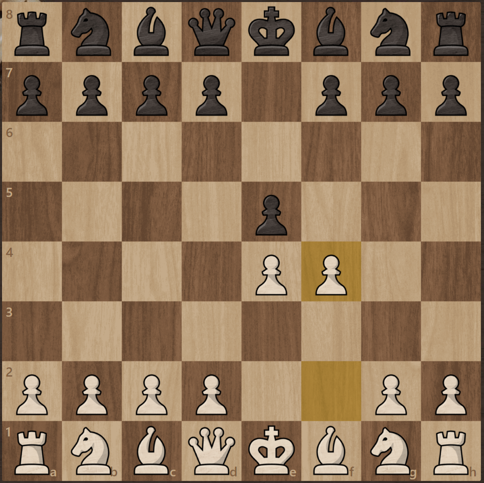

The Italian Game is one of the oldest openings in chess and has been around for centuries. This classical 1.e4 opening can lead to slower and positional games as well as open, tactical battles. Although very common among beginners, the Italian Game is
a part of the repertoire of players of every level.
Pros
Natural Play
Focus on the Center
Rapid Development
Cons
The bishop on c4 might be exposed
Black's center is not under immediate pressure
Show less
Show more
Sicilian Defense
1.e4 c5
The Sicilian Defense is the most popular response to White's 1.e4. Employed by masters and beginners alike, the Sicilian Defense is a reputable and positionally sound opening. Still, the Sicilian is a combative opening that tends to lead to dynamic and
sharp positions. One of the oldest registered openings, the Sicilian is full of theory and was used by most of the greatest players in history. World champions GMs Bobby Fischer, Garry Kasparov, Viswanathan Anand, Vladimir Kramnik,
and Magnus Carlsen are just a few of its adopters.
Pros
Creates unbalanced games
Black has good attacking chances
It's an excellent opening to play when you need to win
Cons
White has many ways to meet the Sicilian
White gets great attacking chances in the main variations
There is a lot of theory
Show less
Show more

King's Gambit
1.e4 e5 2.f4
The King's Gambit is an age-old aggressive opening that Romantic chess players revered. Largely employed by top players for more than 300 years, this opening leads to open games that are exciting and, in most cases, decisive. With the rise of engines
and computer analysis, top players have virtually abandoned the King's Gambit in high-stakes games because of its risky nature. However, tactical players who enjoy sharp games can still employ this opening to play for a fabulous (and
usually sacrificial) attack to win the game in style.
Pros
It's an exhilarating and fun opening
White goes for the initiative
Cons
Black has many different options to choose from
White's king can become exposed
It's a risky opening
Show less
Show more
Queen's Gambit
1.d4 d5 2.c4
The Queen's Gambit is one of the oldest and most reputable 1.d4 openings for White. Unlike 1.e4 openings, the Queen's Gambit usually evolves into a strategic game rather than an all-out tactical battle. Despite being around for centuries, this opening
is still one of the cornerstones of every elite players' repertoire. It's also an excellent choice for beginners and intermediate players.
Pros
Fights to control the center
It puts immediate pressure on Black
Gains space
Cons
White may have to spend time getting the pawn back
Less attacking chances against the black king
Black may aim to counterattack d4
Show less
Show more
Scotch Game
1.e4 e5 2.Nf3 Nc6 3.d4
The Scotch Game is a centuries-old 1.e4 opening for White and one of the best alternatives to the Ruy Lopez. A good opening for beginners, the Scotch is also an excellent weapon for players of every strength level. One of its most prominent adopters was
GM Garry Kasparov. Other elite players like GMs Vladimir Kramnik, Levon Aronian, and Magnus Carlsen also have the Scotch as part of their arsenal.
Pros
White virtually guarantees himself a space advantage
Black is unable to maintain the e5 point.
It avoids the well-analyzed Ruy Lopez.
Cons
It releases the tension very early.
Recapturing the d4 pawn will require a second move by the white knight.
The e4 pawn can later come under attack.
Show less
Show more
Caro-Kann Defense
1.e4 c6 2.d4 d5
The Caro-Kann Defense is known above all for its solidity. The defining move, 1...c6, is the fourth most popular reply to 1.e4 and nearly twice as common as the number five move. It prepares for 2...d5 without blocking in the light-squared bishop, which
is considered the main drawback of its cousin the French Defense (1.e4 e6). A standby for positional players at almost every level, the Caro-Kann was a particular favorite of world champion GM Anatoly Karpov.
Pros
Sound pawn structure
Free light-squared bishop
Safe and solid
Cons
Less space for black
Slower development
There are many different responses for White
Show less
Show more
French Defense
1.e4 e6
The French Defense is one of the most popular Black responses to 1.e4. It has consistently been a part of masters' repertoire since the 1800s and one of the favorites of positional players. Usually leading to slower games, this opening is a good choice
for players of all levels.
Pros
Solid and sound structure
Sharp counterattacking possibilities
Easy to learn
Cons
Black has a space disadvantage
Black's light-squared bishop is locked in
Can become passive
Show less
Show more
King's Gambit
1.e4 e5 2. f4
The King's Gambit is an age-old aggressive opening that Romantic chess players revered. Largely employed by top players for more than 300 years, this opening leads to open games that are exciting and, in most cases, decisive. With the rise of engines
and computer analysis, top players have virtually abandoned the King's Gambit in high-stakes games because of its risky nature. However, tactical players who enjoy sharp games can still employ this opening to play for a fabulous (and
usually sacrificial) attack to win the game in style.
Pros
Black opens the game immediately
Usually both black bishops have freedom
A provocative opening
Cons
Black has many different options to choose from
White's king can become exposed
It's a risky opening
Show less
Show more
Scandinavian Defense
1.e4 d5
The Scandinavian Defense, formerly better known in English language texts as the Center-Counter, is Black's seventh most popular response to 1.e4.
Pros
Black opens the game immediately
Usually both black bishops have freedom
A provocative opening
Cons
After the capture 2.exd5, Black loses time recapturing
Because Black loses some time, he is in danger of a quick knockout
White usually has more central space
Show less
Show more
Spanish Game
1.e4 e5 2. Nf3 Nc6 4. Bb5
The Ruy Lopez (also known as the Spanish Opening or Spanish Game) is one of the oldest and most analyzed openings in chess history. Most of the world's top players have adopted this rich opening as part of their repertoire, and many of them play it with
both colors. Despite having a large amount of theory, it is an opening that players of all levels can enjoy.
Pros
It leads to very complex and multifaceted play
It tends to give White long-term pressure
White develops rapidly, and castles quickly
There are good lines for both tactical and positional players
Cons
It's difficult to learn its extensive theory
Black has a vast number of defenses to choose from